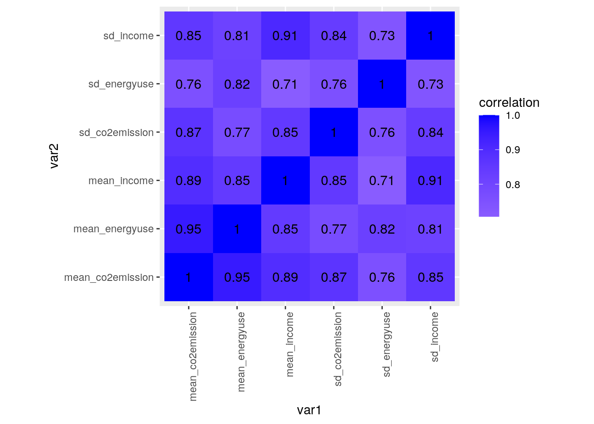
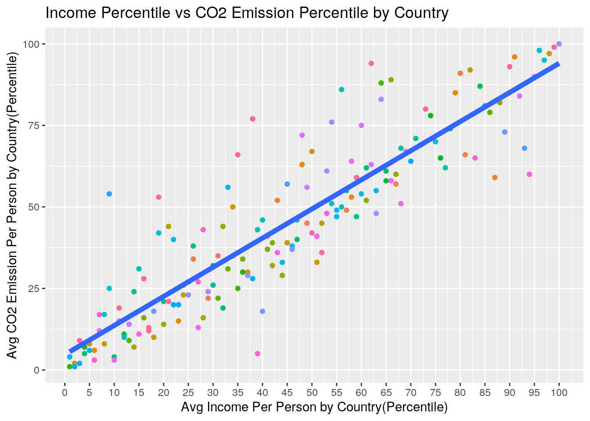
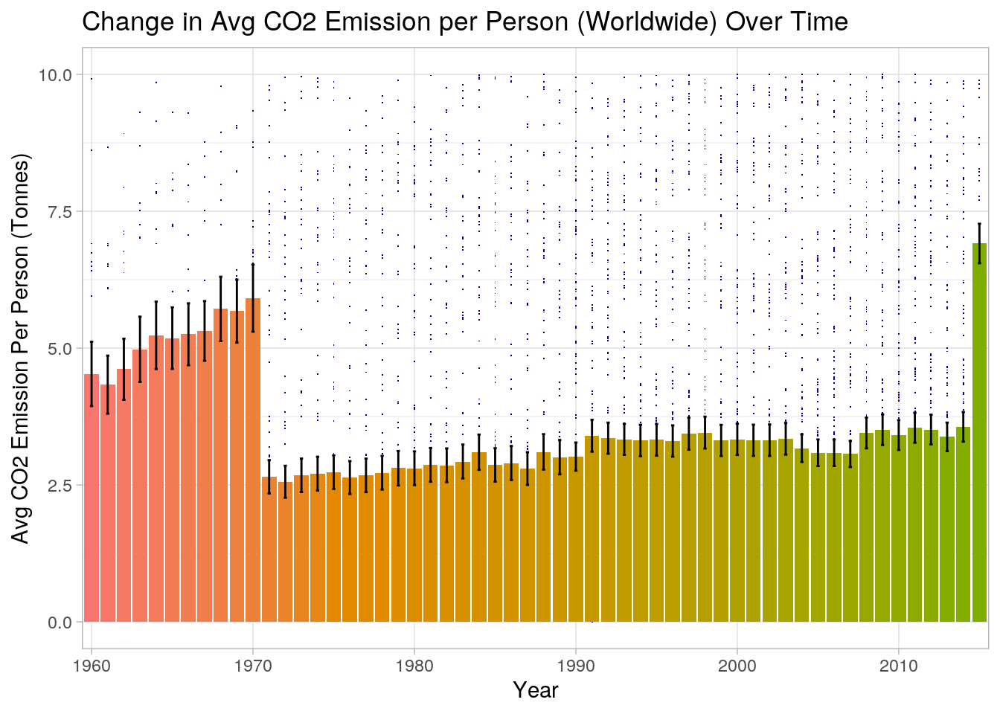
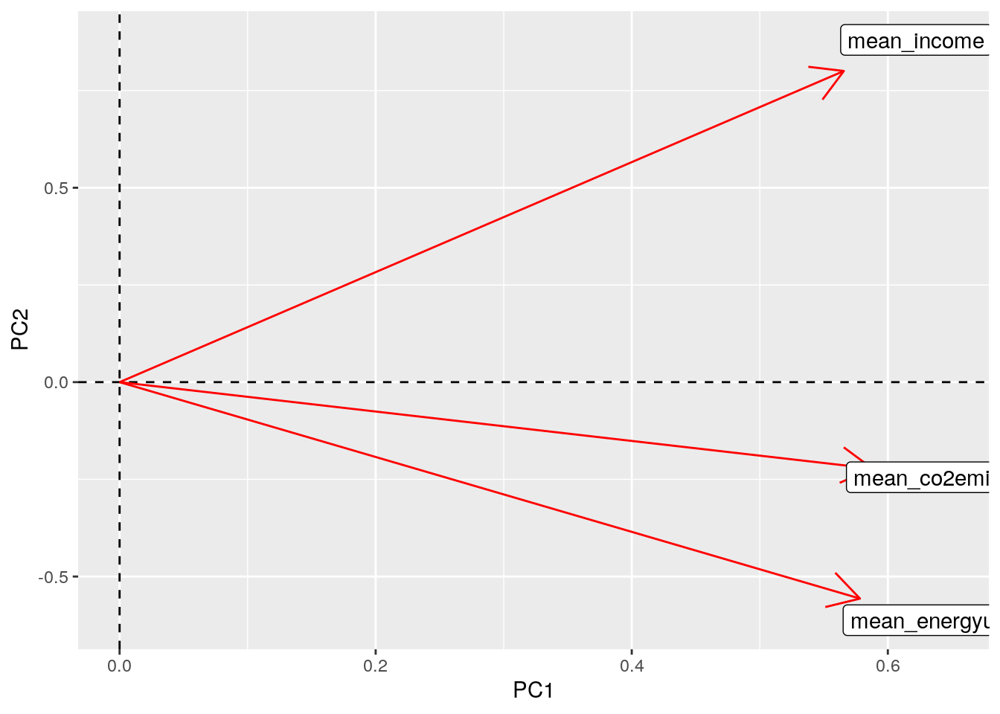

This is an R Markdown document. Markdown is a simple formatting syntax for authoring HTML, PDF, and MS Word documents. For more details on using R Markdown see http://rmarkdown.rstudio.com.
When you click the Knit button a document will be generated that includes both content as well as the output of any embedded R code chunks within the document. You can embed an R code chunk like this:
library(dplyr)##
## Attaching package: 'dplyr'## The following objects are masked from 'package:stats':
##
## filter, lag## The following objects are masked from 'package:base':
##
## intersect, setdiff, setequal, unionlibrary(ggplot2)
library(ggrepel)
library(tidyr)
library(tidyverse)## ── Attaching packages ────────────────────────────────────────── tidyverse 1.3.0 ──## ✓ tibble 3.0.3 ✓ stringr 1.4.0
## ✓ readr 1.3.1 ✓ forcats 0.5.0
## ✓ purrr 0.3.4## ── Conflicts ───────────────────────────────────────────── tidyverse_conflicts() ──
## x dplyr::filter() masks stats::filter()
## x dplyr::lag() masks stats::lag()co2emissions <- read_csv("co2_emissions_tonnes_per_person.csv")## Parsed with column specification:
## cols(
## .default = col_double(),
## country = col_character()
## )## See spec(...) for full column specifications.avgincome<- read_csv("income_per_person_gdppercapita_ppp_inflation_adjusted.csv")## Parsed with column specification:
## cols(
## .default = col_double(),
## country = col_character()
## )
## See spec(...) for full column specifications.avgenergyuse <- read_csv("energy_use_per_person.csv")## Parsed with column specification:
## cols(
## .default = col_double(),
## country = col_character()
## )
## See spec(...) for full column specifications.head(avgincome)## # A tibble: 6 x 242
## country `1800` `1801` `1802` `1803` `1804` `1805` `1806` `1807` `1808` `1809`
## <chr> <dbl> <dbl> <dbl> <dbl> <dbl> <dbl> <dbl> <dbl> <dbl> <dbl>
## 1 Afghan… 603 603 603 603 603 603 603 603 603 603
## 2 Albania 667 667 667 667 667 668 668 668 668 668
## 3 Algeria 715 716 717 718 719 720 721 722 723 724
## 4 Andorra 1200 1200 1200 1200 1210 1210 1210 1210 1220 1220
## 5 Angola 618 620 623 626 628 631 634 637 640 642
## 6 Antigu… 757 757 757 757 757 757 757 758 758 758
## # … with 231 more variables: `1810` <dbl>, `1811` <dbl>, `1812` <dbl>,
## # `1813` <dbl>, `1814` <dbl>, `1815` <dbl>, `1816` <dbl>, `1817` <dbl>,
## # `1818` <dbl>, `1819` <dbl>, `1820` <dbl>, `1821` <dbl>, `1822` <dbl>,
## # `1823` <dbl>, `1824` <dbl>, `1825` <dbl>, `1826` <dbl>, `1827` <dbl>,
## # `1828` <dbl>, `1829` <dbl>, `1830` <dbl>, `1831` <dbl>, `1832` <dbl>,
## # `1833` <dbl>, `1834` <dbl>, `1835` <dbl>, `1836` <dbl>, `1837` <dbl>,
## # `1838` <dbl>, `1839` <dbl>, `1840` <dbl>, `1841` <dbl>, `1842` <dbl>,
## # `1843` <dbl>, `1844` <dbl>, `1845` <dbl>, `1846` <dbl>, `1847` <dbl>,
## # `1848` <dbl>, `1849` <dbl>, `1850` <dbl>, `1851` <dbl>, `1852` <dbl>,
## # `1853` <dbl>, `1854` <dbl>, `1855` <dbl>, `1856` <dbl>, `1857` <dbl>,
## # `1858` <dbl>, `1859` <dbl>, `1860` <dbl>, `1861` <dbl>, `1862` <dbl>,
## # `1863` <dbl>, `1864` <dbl>, `1865` <dbl>, `1866` <dbl>, `1867` <dbl>,
## # `1868` <dbl>, `1869` <dbl>, `1870` <dbl>, `1871` <dbl>, `1872` <dbl>,
## # `1873` <dbl>, `1874` <dbl>, `1875` <dbl>, `1876` <dbl>, `1877` <dbl>,
## # `1878` <dbl>, `1879` <dbl>, `1880` <dbl>, `1881` <dbl>, `1882` <dbl>,
## # `1883` <dbl>, `1884` <dbl>, `1885` <dbl>, `1886` <dbl>, `1887` <dbl>,
## # `1888` <dbl>, `1889` <dbl>, `1890` <dbl>, `1891` <dbl>, `1892` <dbl>,
## # `1893` <dbl>, `1894` <dbl>, `1895` <dbl>, `1896` <dbl>, `1897` <dbl>,
## # `1898` <dbl>, `1899` <dbl>, `1900` <dbl>, `1901` <dbl>, `1902` <dbl>,
## # `1903` <dbl>, `1904` <dbl>, `1905` <dbl>, `1906` <dbl>, `1907` <dbl>,
## # `1908` <dbl>, `1909` <dbl>, …head(co2emissions)## # A tibble: 6 x 220
## country `1800` `1801` `1802` `1803` `1804` `1805` `1806` `1807` `1808` `1809`
## <chr> <dbl> <dbl> <dbl> <dbl> <dbl> <dbl> <dbl> <dbl> <dbl> <dbl>
## 1 Afghan… NA NA NA NA NA NA NA NA NA NA
## 2 Albania NA NA NA NA NA NA NA NA NA NA
## 3 Algeria NA NA NA NA NA NA NA NA NA NA
## 4 Andorra NA NA NA NA NA NA NA NA NA NA
## 5 Angola NA NA NA NA NA NA NA NA NA NA
## 6 Antigu… NA NA NA NA NA NA NA NA NA NA
## # … with 209 more variables: `1810` <dbl>, `1811` <dbl>, `1812` <dbl>,
## # `1813` <dbl>, `1814` <dbl>, `1815` <dbl>, `1816` <dbl>, `1817` <dbl>,
## # `1818` <dbl>, `1819` <dbl>, `1820` <dbl>, `1821` <dbl>, `1822` <dbl>,
## # `1823` <dbl>, `1824` <dbl>, `1825` <dbl>, `1826` <dbl>, `1827` <dbl>,
## # `1828` <dbl>, `1829` <dbl>, `1830` <dbl>, `1831` <dbl>, `1832` <dbl>,
## # `1833` <dbl>, `1834` <dbl>, `1835` <dbl>, `1836` <dbl>, `1837` <dbl>,
## # `1838` <dbl>, `1839` <dbl>, `1840` <dbl>, `1841` <dbl>, `1842` <dbl>,
## # `1843` <dbl>, `1844` <dbl>, `1845` <dbl>, `1846` <dbl>, `1847` <dbl>,
## # `1848` <dbl>, `1849` <dbl>, `1850` <dbl>, `1851` <dbl>, `1852` <dbl>,
## # `1853` <dbl>, `1854` <dbl>, `1855` <dbl>, `1856` <dbl>, `1857` <dbl>,
## # `1858` <dbl>, `1859` <dbl>, `1860` <dbl>, `1861` <dbl>, `1862` <dbl>,
## # `1863` <dbl>, `1864` <dbl>, `1865` <dbl>, `1866` <dbl>, `1867` <dbl>,
## # `1868` <dbl>, `1869` <dbl>, `1870` <dbl>, `1871` <dbl>, `1872` <dbl>,
## # `1873` <dbl>, `1874` <dbl>, `1875` <dbl>, `1876` <dbl>, `1877` <dbl>,
## # `1878` <dbl>, `1879` <dbl>, `1880` <dbl>, `1881` <dbl>, `1882` <dbl>,
## # `1883` <dbl>, `1884` <dbl>, `1885` <dbl>, `1886` <dbl>, `1887` <dbl>,
## # `1888` <dbl>, `1889` <dbl>, `1890` <dbl>, `1891` <dbl>, `1892` <dbl>,
## # `1893` <dbl>, `1894` <dbl>, `1895` <dbl>, `1896` <dbl>, `1897` <dbl>,
## # `1898` <dbl>, `1899` <dbl>, `1900` <dbl>, `1901` <dbl>, `1902` <dbl>,
## # `1903` <dbl>, `1904` <dbl>, `1905` <dbl>, `1906` <dbl>, `1907` <dbl>,
## # `1908` <dbl>, `1909` <dbl>, …head(avgenergyuse)## # A tibble: 6 x 57
## country `1960` `1961` `1962` `1963` `1964` `1965` `1966` `1967` `1968` `1969`
## <chr> <dbl> <dbl> <dbl> <dbl> <dbl> <dbl> <dbl> <dbl> <dbl> <dbl>
## 1 Albania NA NA NA NA NA NA NA NA NA NA
## 2 Algeria NA NA NA NA NA NA NA NA NA NA
## 3 Angola NA NA NA NA NA NA NA NA NA NA
## 4 Antigu… NA NA NA NA NA NA NA NA NA NA
## 5 Argent… NA NA NA NA NA NA NA NA NA NA
## 6 Armenia NA NA NA NA NA NA NA NA NA NA
## # … with 46 more variables: `1970` <dbl>, `1971` <dbl>, `1972` <dbl>,
## # `1973` <dbl>, `1974` <dbl>, `1975` <dbl>, `1976` <dbl>, `1977` <dbl>,
## # `1978` <dbl>, `1979` <dbl>, `1980` <dbl>, `1981` <dbl>, `1982` <dbl>,
## # `1983` <dbl>, `1984` <dbl>, `1985` <dbl>, `1986` <dbl>, `1987` <dbl>,
## # `1988` <dbl>, `1989` <dbl>, `1990` <dbl>, `1991` <dbl>, `1992` <dbl>,
## # `1993` <dbl>, `1994` <dbl>, `1995` <dbl>, `1996` <dbl>, `1997` <dbl>,
## # `1998` <dbl>, `1999` <dbl>, `2000` <dbl>, `2001` <dbl>, `2002` <dbl>,
## # `2003` <dbl>, `2004` <dbl>, `2005` <dbl>, `2006` <dbl>, `2007` <dbl>,
## # `2008` <dbl>, `2009` <dbl>, `2010` <dbl>, `2011` <dbl>, `2012` <dbl>,
## # `2013` <dbl>, `2014` <dbl>, `2015` <dbl>#My datasets were not tidy so I tidyed them before joining them
avgincomes <- avgincome %>% pivot_longer(c(2:242), names_to = "year", values_to= "avg income per person")
head(avgincomes)## # A tibble: 6 x 3
## country year `avg income per person`
## <chr> <chr> <dbl>
## 1 Afghanistan 1800 603
## 2 Afghanistan 1801 603
## 3 Afghanistan 1802 603
## 4 Afghanistan 1803 603
## 5 Afghanistan 1804 603
## 6 Afghanistan 1805 603avgco2<- co2emissions
avgCO2use<- avgco2 %>% pivot_longer(c(2:220), names_to = "year", values_to= "avg co2 consumption per person")
head(avgCO2use)## # A tibble: 6 x 3
## country year `avg co2 consumption per person`
## <chr> <chr> <dbl>
## 1 Afghanistan 1800 NA
## 2 Afghanistan 1801 NA
## 3 Afghanistan 1802 NA
## 4 Afghanistan 1803 NA
## 5 Afghanistan 1804 NA
## 6 Afghanistan 1805 NAaverageEnergyUSE <- avgenergyuse %>% pivot_longer(c(2:57), names_to = "year", values_to= "avg energy consumption per person")
#These pivot longer functions allow year to be a column rather than a row for each data set. This makes the data easier to work with.
head(averageEnergyUSE)## # A tibble: 6 x 3
## country year `avg energy consumption per person`
## <chr> <chr> <dbl>
## 1 Albania 1960 NA
## 2 Albania 1961 NA
## 3 Albania 1962 NA
## 4 Albania 1963 NA
## 5 Albania 1964 NA
## 6 Albania 1965 NA#I joined my data in two steps, I used left join both times because I wanted to match all the data sets based on "country" and "year
joiningpt1 <- left_join(avgCO2use, avgincomes, by=c("country", "year"))
head(joiningpt1)## # A tibble: 6 x 4
## country year `avg co2 consumption per person` `avg income per person`
## <chr> <chr> <dbl> <dbl>
## 1 Afghanistan 1800 NA 603
## 2 Afghanistan 1801 NA 603
## 3 Afghanistan 1802 NA 603
## 4 Afghanistan 1803 NA 603
## 5 Afghanistan 1804 NA 603
## 6 Afghanistan 1805 NA 603totaldata <- left_join(joiningpt1, averageEnergyUSE, by=c("country", "year"))
totaldata <- left_join(joiningpt1, averageEnergyUSE, by=c("country", "year"))
head(totaldata)## # A tibble: 6 x 5
## country year `avg co2 consumption… `avg income per p… `avg energy consumpt…
## <chr> <chr> <dbl> <dbl> <dbl>
## 1 Afghanis… 1800 NA 603 NA
## 2 Afghanis… 1801 NA 603 NA
## 3 Afghanis… 1802 NA 603 NA
## 4 Afghanis… 1803 NA 603 NA
## 5 Afghanis… 1804 NA 603 NA
## 6 Afghanis… 1805 NA 603 NAtotaldata %>% summarize_all(funs(sum(is.na(.))))## Warning: `funs()` is deprecated as of dplyr 0.8.0.
## Please use a list of either functions or lambdas:
##
## # Simple named list:
## list(mean = mean, median = median)
##
## # Auto named with `tibble::lst()`:
## tibble::lst(mean, median)
##
## # Using lambdas
## list(~ mean(., trim = .2), ~ median(., na.rm = TRUE))
## This warning is displayed once every 8 hours.
## Call `lifecycle::last_warnings()` to see where this warning was generated.## # A tibble: 1 x 5
## country year `avg co2 consumption … `avg income per p… `avg energy consumpti…
## <int> <int> <int> <int> <int>
## 1 0 0 24009 219 36128noNAtotaldata <- na.omit(totaldata)totalaverages <- noNAtotaldata%>%group_by(country)%>% summarise_at(vars(-year), funs(mean(., na.rm=TRUE)))
head(totalaverages)## # A tibble: 6 x 4
## country `avg co2 consumption … `avg income per p… `avg energy consumptio…
## <chr> <dbl> <dbl> <dbl>
## 1 Albania 1.71 5559. 748.
## 2 Algeria 2.91 10835 805.
## 3 Angola 0.721 4910 508.
## 4 Antigua and… 5.20 22420 1682
## 5 Argentina 3.87 14730. 1589.
## 6 Armenia 1.67 4536 896#I decided that I wanted to make every column of data on similar scales, so I made each one into a percentile with 100 being the country that had the highest value in each column. I then removed the non-percentile columns.
totalpercentiles <- totalaverages %>% mutate('co2_pctile' = ntile(`avg co2 consumption per person`, 100)) %>% mutate('income_pctile' = ntile(`avg income per person`, 100)) %>% mutate('energyuse_pctile' = ntile(`avg energy consumption per person`, 100)) %>% select(-"avg co2 consumption per person") %>% select(-"avg income per person") %>% select(-"avg energy consumption per person")
head(totalpercentiles) ## # A tibble: 6 x 4
## country co2_pctile income_pctile energyuse_pctile
## <chr> <int> <int> <int>
## 1 Albania 35 31 37
## 2 Algeria 45 49 38
## 3 Angola 22 29 24
## 4 Antigua and Barbuda 57 67 54
## 5 Argentina 49 57 52
## 6 Armenia 34 26 40#I grouped my data by country and arranged it in descending order of "co2_pctile" so I could get a quick idea about if my predictions at the beginning of my project were correct or not. From a quick look, it would appear as if they were (ex:Qatar is in the 100th percentile for avg income per person, avg energy use per person, and avg co2 emissions per person)
totalpercentiles %>% group_by(country) %>% arrange(desc(co2_pctile)) %>% head()## # A tibble: 6 x 4
## # Groups: country [6]
## country co2_pctile income_pctile energyuse_pctile
## <chr> <int> <int> <int>
## 1 Qatar 100 100 100
## 2 United Arab Emirates 99 99 97
## 3 Luxembourg 98 96 98
## 4 Brunei 97 98 91
## 5 Bahrain 96 91 99
## 6 Kuwait 95 97 96#I wanted to get an idea of where the United States ranks (which percentile) in each of the categories
totalpercentiles %>% filter(country== "United States")## # A tibble: 1 x 4
## country co2_pctile income_pctile energyuse_pctile
## <chr> <int> <int> <int>
## 1 United States 93 90 94noNAdataframe<- data.frame(noNAtotaldata)noNAdataframe %>% group_by(country=="United States") %>% summarise(n())## `summarise()` ungrouping output (override with `.groups` argument)## # A tibble: 2 x 2
## `country == "United States"` `n()`
## <lgl> <int>
## 1 FALSE 5861
## 2 TRUE 56datasummary <- noNAdataframe %>% group_by(country) %>% summarize(mean_co2emission=mean(avg.co2.consumption.per.person), mean_income=mean(avg.income.per.person), mean_energyuse= mean(avg.energy.consumption.per.person),sd_co2emission=sd(avg.co2.consumption.per.person), sd_income=sd(avg.income.per.person), sd_energyuse= sd(avg.energy.consumption.per.person))## `summarise()` ungrouping output (override with `.groups` argument)#The standard deviation columns give us the average standard deviation for each category, from all recorded years per country.
head(datasummary)## # A tibble: 6 x 7
## country mean_co2emission mean_income mean_energyuse sd_co2emission sd_income
## <chr> <dbl> <dbl> <dbl> <dbl> <dbl>
## 1 Albania 1.71 5559. 748. 0.713 2316.
## 2 Algeria 2.91 10835 805. 0.545 1524.
## 3 Angola 0.721 4910 508. 0.323 1019.
## 4 Antigu… 5.20 22420 1682 0.402 3449.
## 5 Argent… 3.87 14730. 1589. 0.392 2268.
## 6 Armenia 1.67 4536 896 1.14 2170.
## # … with 1 more variable: sd_energyuse <dbl>datasummary %>% summary()## country mean_co2emission mean_income mean_energyuse
## Length:168 Min. : 0.05857 Min. : 569.1 Min. : 12.4
## Class :character 1st Qu.: 0.72075 1st Qu.: 3675.4 1st Qu.: 476.0
## Mode :character Median : 2.58077 Median : 8720.0 Median : 991.4
## Mean : 4.96425 Mean : 14252.3 Mean : 1867.6
## 3rd Qu.: 6.79057 3rd Qu.: 18007.9 3rd Qu.: 2472.8
## Max. :52.47955 Max. :112427.3 Max. :15437.0
## sd_co2emission sd_income sd_energyuse
## Min. : 0.0020 Min. : 24.08 Min. : 0.75
## 1st Qu.: 0.1925 1st Qu.: 764.50 1st Qu.: 69.16
## Median : 0.6048 Median : 2100.58 Median : 218.38
## Mean : 1.2821 Mean : 4071.62 Mean : 454.45
## 3rd Qu.: 1.6350 3rd Qu.: 5241.77 3rd Qu.: 537.84
## Max. :15.3987 Max. :36970.77 Max. :4530.08#I then filtered out the United States so I could compare our country to the world wide averages.
datasummary %>% filter(country=="United States")## # A tibble: 1 x 7
## country mean_co2emission mean_income mean_energyuse sd_co2emission sd_income
## <chr> <dbl> <dbl> <dbl> <dbl> <dbl>
## 1 United… 19.4 35420. 7421. 1.77 10859.
## # … with 1 more variable: sd_energyuse <dbl>19.40714/4.96425 #CO2 Emissions## [1] 3.9093835419.64/14252.3 #Income## [1] 2.4851887421.25/1867.6 #Energy Use## [1] 3.973683totalpercentiles %>% filter(country== "United States")## # A tibble: 1 x 4
## country co2_pctile income_pctile energyuse_pctile
## <chr> <int> <int> <int>
## 1 United States 93 90 94#I was then curious about the difference between the averaged overall mean for each category compared to the median mean of each category
datasummary %>% summarise(median(mean_income), mean(mean_income), median(mean_co2emission), mean(mean_co2emission), median(mean_energyuse), mean(mean_energyuse))## # A tibble: 1 x 6
## `median(mean_in… `mean(mean_inco… `median(mean_co… `mean(mean_co2e…
## <dbl> <dbl> <dbl> <dbl>
## 1 8720 14252. 2.58 4.96
## # … with 2 more variables: `median(mean_energyuse)` <dbl>,
## # `mean(mean_energyuse)` <dbl>datasummary %>% summarise(sd(mean_co2emission), sd(mean_income), sd(mean_energyuse)) ## # A tibble: 1 x 3
## `sd(mean_co2emission)` `sd(mean_income)` `sd(mean_energyuse)`
## <dbl> <dbl> <dbl>
## 1 6.79 17174. 2248.datasummary %>% filter(mean_co2emission== max(mean_co2emission)) ## # A tibble: 1 x 7
## country mean_co2emission mean_income mean_energyuse sd_co2emission sd_income
## <chr> <dbl> <dbl> <dbl> <dbl> <dbl>
## 1 Qatar 52.5 112427. 15437. 15.2 34309.
## # … with 1 more variable: sd_energyuse <dbl>datasummary %>% filter(mean_co2emission== min(mean_co2emission))## # A tibble: 1 x 7
## country mean_co2emission mean_income mean_energyuse sd_co2emission sd_income
## <chr> <dbl> <dbl> <dbl> <dbl> <dbl>
## 1 Ethiop… 0.0586 764 479. 0.0173 200.
## # … with 1 more variable: sd_energyuse <dbl>datasummary %>% filter(mean_income== max(mean_income)) ## # A tibble: 1 x 7
## country mean_co2emission mean_income mean_energyuse sd_co2emission sd_income
## <chr> <dbl> <dbl> <dbl> <dbl> <dbl>
## 1 Qatar 52.5 112427. 15437. 15.2 34309.
## # … with 1 more variable: sd_energyuse <dbl>datasummary %>% filter(mean_income== min(mean_income))## # A tibble: 1 x 7
## country mean_co2emission mean_income mean_energyuse sd_co2emission sd_income
## <chr> <dbl> <dbl> <dbl> <dbl> <dbl>
## 1 Mozamb… 0.149 569. 489. 0.0968 231.
## # … with 1 more variable: sd_energyuse <dbl>datasummary %>% filter(mean_energyuse== max(mean_energyuse)) ## # A tibble: 1 x 7
## country mean_co2emission mean_income mean_energyuse sd_co2emission sd_income
## <chr> <dbl> <dbl> <dbl> <dbl> <dbl>
## 1 Qatar 52.5 112427. 15437. 15.2 34309.
## # … with 1 more variable: sd_energyuse <dbl>datasummary %>% filter(mean_energyuse== min(mean_energyuse))## # A tibble: 1 x 7
## country mean_co2emission mean_income mean_energyuse sd_co2emission sd_income
## <chr> <dbl> <dbl> <dbl> <dbl> <dbl>
## 1 Lesotho 1.01 1962. 12.4 0.0212 113.
## # … with 1 more variable: sd_energyuse <dbl>datasummary %>%summarize(cor(mean_co2emission, mean_energyuse, use="pair"))## # A tibble: 1 x 1
## `cor(mean_co2emission, mean_energyuse, use = "pair")`
## <dbl>
## 1 0.951datasummary %>%summarize(cor(mean_co2emission, mean_income, use="pair"))## # A tibble: 1 x 1
## `cor(mean_co2emission, mean_income, use = "pair")`
## <dbl>
## 1 0.894datasummary %>%summarize(cor(mean_income, mean_energyuse, use="pair"))## # A tibble: 1 x 1
## `cor(mean_income, mean_energyuse, use = "pair")`
## <dbl>
## 1 0.847#I first looked at these correlations, because I was not super interested in my "SD" variables. I found that they each had strong positive correlations with one another.
cormatrix <- datasummary %>% select_if(is.numeric) %>% cor(use="pair")
tidymatrix <- cormatrix %>% as.data.frame %>% rownames_to_column("var1") %>%
pivot_longer(-1,names_to="var2",values_to="correlation")tidymatrix %>% ggplot(aes(var1,var2,fill=correlation)) +geom_tile() +scale_fill_gradient2(low="red",mid="white",high="blue") +geom_text(aes(label=round(correlation,2)),color = "black", size = 4) +theme(axis.text.x = element_text(angle = 90, hjust=1)) + coord_fixed()
ggplot(data = totalpercentiles, aes(x = income_pctile, y = co2_pctile, color=country)) + geom_point() + scale_x_continuous(breaks = seq(0,100,by = 5)) + ggtitle("Income Percentile vs CO2 Emission Percentile by Country") + labs(y="Avg CO2 Emission Per Person by Country(Percentile)", x = "Avg Income Per Person by Country(Percentile)") + theme(legend.position = "none") + geom_smooth(aes(group = 1), size = 2, method = "lm", se = FALSE) ## `geom_smooth()` using formula 'y ~ x'
ggplot(noNAdataframe, aes(year,avg.co2.consumption.per.person, fill=year)) + geom_point(aes(fill=country), shape=".", color="darkblue")+ geom_bar(stat="summary", aes(year,avg.co2.consumption.per.person), fun = "mean") + geom_errorbar(stat="summary", width= .2) + xlim(1960,2015) + ylim(0,10)+ scale_x_discrete(breaks = seq(1960, 2015,by = 10))+labs(y="Avg CO2 Emission Per Person (Tonnes)", x = "Year")+ theme_light() + theme(legend.position = "none") + ggtitle("Change in Avg CO2 Emission per Person (Worldwide) Over Time") ## Scale for 'x' is already present. Adding another scale for 'x', which will
## replace the existing scale.## Warning: Removed 1029 rows containing non-finite values (stat_summary).
## Warning: Removed 1029 rows containing non-finite values (stat_summary).## No summary function supplied, defaulting to `mean_se()`## Warning: Removed 1029 rows containing missing values (geom_point).
#For this I scaled my data and rid it of unwanted variables.
PCdata<- datasummary %>% select(-c(country, sd_co2emission, sd_income, sd_energyuse)) %>% scale() %>%prcomp()
#Allows us to see the variance each pc is responsible for
PCdata## Standard deviations (1, .., p=3):
## [1] 1.6717365 0.4032793 0.2065499
##
## Rotation (n x k) = (3 x 3):
## PC1 PC2 PC3
## mean_co2emission 0.5879695 -0.2224087 -0.7777058
## mean_income 0.5656327 0.8003483 0.1987517
## mean_energyuse 0.5782314 -0.5567558 0.5963820#I then performed PCA by giving a correlation matrix to eigen
eig1 <- datasummary %>% select(-c(country, sd_co2emission, sd_income, sd_energyuse)) %>% cor() %>% eigen()
#Allows us to see the eigen values and makes a matrix
eig1## eigen() decomposition
## $values
## [1] 2.79470296 0.16263418 0.04266286
##
## $vectors
## [,1] [,2] [,3]
## [1,] -0.5879695 0.2224087 0.7777058
## [2,] -0.5656327 -0.8003483 -0.1987517
## [3,] -0.5782314 0.5567558 -0.5963820#Looked at the variance in my data that each PC is responsible for
summary(PCdata)## Importance of components:
## PC1 PC2 PC3
## Standard deviation 1.6717 0.40328 0.20655
## Proportion of Variance 0.9316 0.05421 0.01422
## Cumulative Proportion 0.9316 0.98578 1.00000datasummary %>% select(mean_co2emission, mean_income, mean_energyuse) %>% cor## mean_co2emission mean_income mean_energyuse
## mean_co2emission 1.0000000 0.8939037 0.9505010
## mean_income 0.8939037 1.0000000 0.8466413
## mean_energyuse 0.9505010 0.8466413 1.0000000PCdata$rotation[,1:2]%>%as.data.frame%>%rownames_to_column%>%ggplot()+geom_hline(aes(yintercept=0),lty=2)+ geom_vline(aes(xintercept=0),lty=2)+ylab("PC2")+xlab("PC1")+
geom_segment(aes(x=0,y=0,xend=PC1,yend=PC2),arrow=arrow(),col="red")+
geom_label(aes(x=PC1*1.1,y=PC2*1.1,label=rowname))